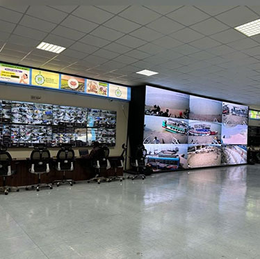

Gangasagar is a holy confluence where millions of devotees from across India gather on the banks of the Ganga to take a sacred dip during Makar Sankranti. Managing such a large congregation is a major responsibility for the Government of West Bengal and the district administration. A range of innovative initiatives have been introduced to make the pilgrimage safer, more accessible and better organised, keeping the well-being of pilgrims at the forefront.
Making Gangasagar Smarter and Safer
e-Snan
E-snan is a one-of-a-kind effort by the South 24 Parganas administration to help the mela to reach pilgrims across the globe. e-Snan helps the devotees who couldn’t visit Gangasagar, have the blessings from the mela. Anyone can now book e-Snan online and witness the divinity at their home with the sacred pack containing Ganga Jal, Mitti, Prasad, and a booklet.
Sagar Sanchar
Sagar Sanchar is an alternative way of communicating through all-weather voice transmission via VHF radio using base stations, repeater stations, high-frequency Manpacks (148 RT handsets), HAM radios & Satellite phones (10 sets), and 9 large LED screens will be in place for emergency communication. Officials from various
Pilgrim Transport Management System
Legends of Gangasagar often described the journey to Sagar Island as a perilous one dealing with harsh physical conditions. With the innovation of technology, even the journey towards the land of moksha is now made safer by the Pilgrim Transport Management System (PTMS). The navigation channels are marked by PTMS. The GPS tracking on all vessels provides real-time analysis of data leading to better crowd management .
e-Darshan
It is specially implemented for pilgrims who desired to visit the devotional destination but failed to do so. e-Darshan has been implemented to live stream the events directly from the mela ground. Dedicated social media pages will provide updates on the latest activities of mela too.
Nirikkhan
In an ancient congregation as large as Gangasagar, the occurrence of unfortunate events could be a probability. Thus, CCTV surveillance is the primary tool for controlling crowds. Real-time tracking of pilgrims will be done for which 1150 CCTV cameras will be installed at all important locations. 20 Drone-based tracking and GPSguided Intelligent Crowd Monitoring will be done through an Integrated Control Room. Transmission of Live feed will be provided to Nabanna Control Room as well.
Environment-friendly Mela
To walk down the path of the divine in pursuit of moksha, one must purify their soul. But, we tend to keep ourselves clean and pollute our surroundings. This would incur nothing but the wrath of the mighty and the destruction of the planet. Thus, the district administration of South 24 Parganas along with the Bakkkhali Development Authority disapproves of the usage of plastic. Instead, they have taken the oath to make Gangasagar environment-friendly in 2023. There will be a distribution of earth-friendly materials. Awareness campaigns and promotional activities will be held by local communities. Litter management will be kept in constant check at every step. More than 10,000 permanent & semi-permanent toilets are erected with proper night soil disposal arrangements. 7 Solid Waste Management Units will be functional. 30 e-carts will be deployed for garbage collection. 3000 personnel will be in charge of sweeping and waste disposal. No stones are to be left unturned to make the land of serenity pristine, inside out.
Bandhan
The district administration has come up with the initiative Bandhan. It is an acknowledgment of devotees’ travel to Sagar Island. Photo Booths with Cameras and customized software will be set up. A personalized certificate bearing the photo of the pilgrim and a note from the administration will be provided to the pilgrims. A beautiful memory of Gangasagar will be etched in their minds forever, making them return every year.
Sagar Arati
In every ritual, Arati is one of the most important and integral part having a deep religious significance. It is a gateway that connects pilgrims across cultures and geographies. In Gangasagar Mela 2026, Arati will be presented in a magnificent manner over the course of three days on January 11, 12, and 13, 2026.
e-Anusandhan
As part of Digital Initiatives, to assist pilgrims for all type of basic facilities, District Administration is using Unique and Universal QR Code. On scanning the code through mobile, pilgrims can view and navigate to desired facilities like drinking water, ATM, toilets, health centre, railway station, bus stand, ferry ghat, May I Help You Kiosk, lost & found Kiosk, Parking, Govt. Accommodation for Mela, Tourist Places, Various point of attraction of Gangasagar Mela, etc. The content to be displayed in Bengali, English and Hindi language. Arrangement of fog lights by WBTC within muri ganga channel, illumination of towers on muri ganga by wbsetcl, fog lights by PHE at jetties and by disaster management department atdifferent strategic locations are being done for smooth of movement of vessels during night. Mega Control Room
Parichay
In a large congregation like Gangasagar, senior citizens and minors visit from various parts of the globe. Unfortunately, due to the heavy rush on the mela days, a considerable number of pilgrims get separated from their families. To reunite such pilgrims, QR-based waterproof wristbands have been introduced by the administration. For each QR band, credentials of the pilgrim wearing it will be updated in the database. The family details of person wearing the wristband can be fetched via a portable barcode reader and then such pilgrims can be reunited with families.
Push SMS Alerts
Bulk SMS will be sent to the pilgrims on regular interval. Messages of Government of West Bengal, various arrangements of Ganga Sagar Mela, alerts if any will be communicated to pilgrims through this system.
Marine Flares
Marine Flares will be used as emergency signalling system for the first time in this year in every vessel for smooth movement of vessel.
Fog Lights
Fog Lights Arrangement of fog lights by WBTC within muri ganga channel, illumination of towers on muri ganga by wbsetcl, fog lights by PHE at jetties and by disaster management department atdifferent strategic locations are being done for smooth of movement of vessels during night.
Go Gangasagar
Gangasagar has a lot of devotees and tourists from a generation who prefer social media and web-based applications. Thus, the District administration of South 24 Parganas has introduced Go Gngasagar. An android mobile app that will provide all necessary

Mega Control Room
In what could be termed the largest religious fair in Eastern India, the Gangasagar is the epitome of a spiritual and historical treasure. Every year, the South 24 Parganas district administration makes massive arrangements to handle the large number of pilgrims
Sagar Pravachan
Sagar Pravachan offers pilgrims a rare opportunity to connect with the divine on the tranquil shores of Sagar. In Sagar Pravachan, religious gurus from various organisations preach the pilgrims on the
Sagar Sankirtan
The Ganga Sagar Mela is not just a gathering of pilgrims; it is a profound celebration of devotion, spirituality, and community. Among the many sacred activities that define this auspicious event, the Sagar Sankirtan stands out as a soulful expression of collective faith and reverence. Sagar Sankirtan is more than just music; it is a bridge that connects individuals